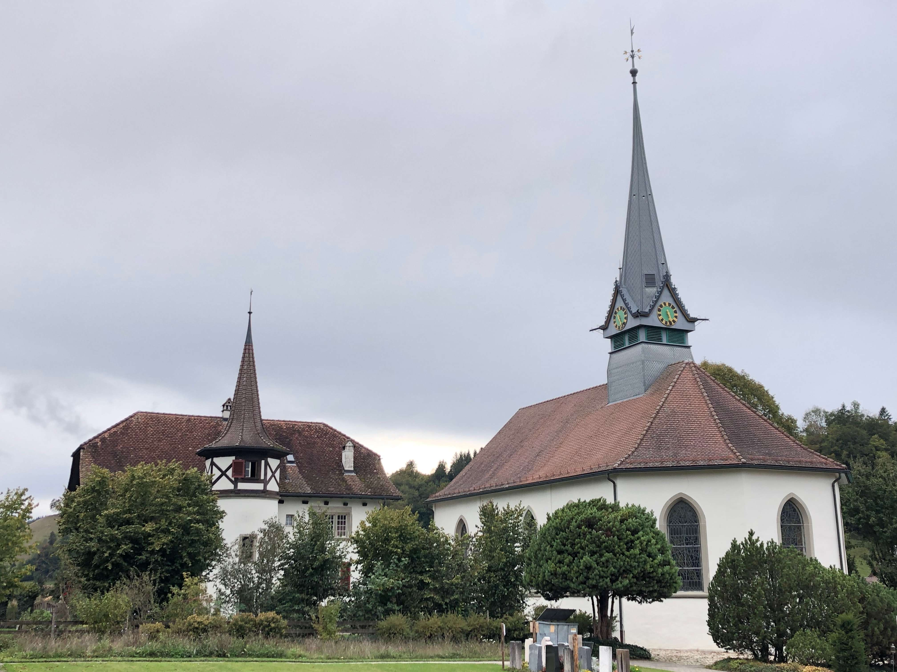

Die reformierte Kirche von Rüegsau war ursprünglich der westliche, hallenförmige Teil der Heiligkreuzkirche des Benediktinerinnenklosters. Urkundlich erwähnt wird das Kloster erstmals 1274. Kirchlich war es der Abtei Trub unterstellt, die vor 1130 von den Herren von Lützelflüh als Priorat des Reformklosters St. Blasien im Schwarzwald gegründet worden war. Im weltlichen Bereich stand Rüegsau unter der Schirmherrschaft seiner Kastvögte, der Freiherren von Brandis. Die Ausgrabungen der Klosterfundamente 1966–1968 ergaben, dass das Kloster in der Zeit zwischen 1140 und 1160 gebaut worden ist. Mit der Reformation wurde das Kloster 1528 aufgehoben, die Nonnen wurden ausbezahlt und das Klostergut der Verwaltung der Herrschaft Brandis zugeschlagen, die den Pfarrer und die Armenspende in Rüegsau und Lützelflüh unterhalten musste; 1607 kam der Kirchensatz an Bern.
Das Kirchengebäude
Die Gemeinde Rüegsau behielt die grosse romanische Klosterkirche, die allerdings um die Osthälfte verkleinert wurde. Weitere bedeutende Eingriffe waren der Barockumbau im 17. Jahrhundert und die neugotische Umgestaltung von 1874, die dem Gebäude sein heutiges Gesicht gab. Mit Hilfe der Denkmalpflege wurde der Bau 1988/1989 einer sorgfältigen Aussenrestaurierung unterzogen, und seither steht er unter Denkmalschutz. In Zusammenarbeit mit der Denkmalpflege entwickelte wenig später Walter Loosli (1932–2015) Entwürfe für neue Kirchenfenster – ein alter Wunsch der Gemeinde. Interessierte Gemeindemitglieder liessen sich dafür begeistern, und so beschloss der Kirchgemeinderat im Dezember 1997 einstimmig, den Künstler mit der Neugestaltung der Kirchenfenster zu beauftragen. Übernehmen konnte die Gemeinde das Werk mit der Einweihungsfeier vom 6. Dezember 1998.
Kirche Rüegsau (Bild: Adriana Basso Schaub)
Die Glasmalereien von Walter Loosli
Walter Loosli, 1932 in einer Täuferfamilie im Jura geboren, bildete sich
als Lehrer und Heilpädagoge in verschiedenen Techniken des bildnerischen
Gestaltens weiter; seit 1972 arbeitete er freischaffend in Köniz. Sein
Hauptwerk liegt in der Wand- und Fenstergestaltung in Kirchen und im
öffentlichen Raum vor allem im Kanton Bern. 1995 erhielt er in Würdigung
seines Wirkens als freischaffender Künstler und Förderer anderer
Kunstschaffender die Verdienstmedaille der Burgergemeinde Bern. Im
November 2015 ist Walter Loosli verstorben.
Walter Looslis Aufgabe in Rüegsau war, die zehn neugotischen Fenster der
Kirche in sein Gestaltungsprogramm einzubeziehen. Der Denkmalpflege war
daran gelegen, den neugotischen Charakter des Gebäudes auch im Innern zu
wahren. So verlangte sie, dass das farbige neugotische Rankenwerk in
allen Fenstern erhalten blieb.
Die sieben Fenster im Schiff und die drei Fenster im Chor legten das
Bildprogramm nahe: im Schiff schuf Walter Loosli einen Bilderfries zur
Schöpfung und im Chor steigert er den Schöpfungsfries in Grösse und
Farbe in die drei Fenster mit der Darstellung der neuen Schöpfung, des
durch Jesus Christus ermöglichten Neuen. «Wenn also jemand in Christus
ist, dann ist das neue Schöpfung; das Alte ist vergangen, siehe, Neues
ist geworden» (2 Kor 5,17). So verbinden sich in Rüegsau «alte und neue
Schöpfung» zu einem geschlossenen Fensterkreis.
In den sieben Fenstern im Schiff übersetzte Walter Loosli die
Schöpfungsgeschichte in Genesis 1,1– 2,4a: das in sieben Tagen durch
jeweils ein Wort von Gott bewirkte Werk in seine Bildsprache. Formal
benutzte er dabei kenntliche Bilder und lesbare Sinnbilder. Diese sind
indes weit mehr als Illustrationen des Bibeltextes, denn er fügte sie in
eine Gesamtform von hoher Abstraktion ein. In zwei Fenstern verzichtete
er sogar auf jede Bildhaftigkeit und setzte nur auf abstrakte Formen in
bunten Farben: im Fenster zum ersten Tag mit der Trennung von Licht und
Finsternis und im Fenster zum siebten Tag mit der Vollendung aller Werke
durch die Sabbatruhe.
Auf die Schöpfung der Zeit folgte am zweiten Tag mit der Errichtung
einer Himmelsfeste, oberhalb welcher die Urflut weiter besteht, die
Schöpfung von Raum. Mit der Trennung zwischen Meer und Erde unterhalb
der Himmelsfeste und der Einladung an die Erde, vielsamige Gräser und
fruchtbringende Bäume hervorspriessen zu lassen, ist mit dem dritten Tag
der Lebensraum für Tiere und Menschen geschaffen. Mit der Ansiedlung der
Himmelsbewohner Sonne, Mond und Sterne am vierten Tag wird zuvor noch
der bereits im ersten Werk angelegte Zeitrhythmus bekräftigt. Am fünften
Tag folgt die Ansiedlung der Wasser- und Lufttiere, die von Gott
gesegnet werden. Die Schöpfung der Landtiere bildet am sechsten Tag den
Auftakt zur Schöpfung des Menschen.
Walter Loosli hat das Fenster zu diesem sechsten Tag so gestaltet, wie
er überhaupt biblische Texte in Glasbilder überträgt: er erzählt
Geschichten, die er aus der Lektüre, nein: dem Studium der biblischen
Bücher gründlich kennt. Er greift Themen, Motive und Symbole auf, die
ihm aus dem Betrachten biblischer Geschichten vertraut geworden sind und
die er in seiner Sprache, mit Farbbildern wiedergibt. In seinem sechsten
Fenster sind ein menschliches Antlitz, ein Hirsch und eine Schlange zu
erkennen. Tier und Mensch sind der biblischen Schöpfungserzählung
zufolge sehr nahe beieinander. Zur Schlange und zum Hirsch besteht noch
eine besondere Beziehung. Die Schlange tritt im zweiten Teil der
Schöpfungserzählung als das listigste Tier, das Gott gemacht hat, auf
und verwickelt die Frau in ein Gespräch, dem sie nicht gewachsen ist. So
isst sie die verbotene Frucht und bringt auch ihren Mann Adam dazu,
davon zu essen. Und mit einem durstigen Hirsch vergleicht der Psalmist
(42,2) den sich nach Gott sehnenden Menschen: «Wie der Hirsch lechzt an
versiegten Bächen, so lechzt meine Seele, Gott, nach dir.»

Glasfenster von Walter Loosli, Der sechste Tag als Auftakt zur Schöpfung des Menschen (Bild: Thomas Loosli).
Von der Schlange in der Schöpfungserzählung führt die
Adam-Christus-Typologie zur «neuen Schöpfung»: «Wie nun durch die Sünde
des Einen die Verdammnis über alle Menschen gekommen ist, so ist auch
durch die Gerechtigkeit des Einen für alle Menschen die Rechtfertigung
gekommen, die zum Leben führt» (Röm 5,18). An diese Rechtfertigung
erinnert Walter Loosli mit der in den drei Chorfenstern zum Ausdruck
gebrachten «neuen Schöpfung»: Karfreitag (links), Ostern (Mitte) und
Pfingsten (rechts). Zur Dreizahl hätte als Motiv auch das
frühchristliche Triduum Paschale – «Die drei österlichen Tage
vom Leiden, vom Tod und von der Auferstehung des Herrn» – gepasst.
Pfingsten war bis ins vierte Jahrhundert der Abschluss der 50tägigen
österlichen Festzeit und so als Fest der Geistsendung eng mit Ostern
verbunden. Diese Verbindung unterstreicht Walter Loosli mit seinem
Triptychon in Rüegsau auf eindrückliche Weise, weil er damit an das
Pauluswort erinnert: «Die Liebe Gottes ist ausgegossen in unsere Herzen
durch den heiligen Geist, der uns gegeben wurde» (Röm 5,5b). In seinen
Fenstern hat Walter Loosli die Farben des neugotischen Rankenwerks und
der neugotischen Gläser fein aufgenommen und so im Einklang mit dem Raum
ein eigenständiges Kunstwerk geschaffen. Die sorgfältig ausgewählten
Farben und das handwerklich hergestellte Glas lassen den Kirchenraum
selbst bei trübem Wetter erstrahlen.


Glasfenster von Walter Loosli, linkes Bild: Im Osterfenster keimt aus dem Kelch neues Leben, die neue Schöpfung. Rechtes Bild: Blick in den Chorraum mit dem Pfingstfenster (Bilder: Thomas Loosli).
Dr. Rolf Weibel, kulturwissenschaftlich orientierter Theologe, arbeitete als Fachjournalist.
Weitere Artikel von {{ author.author }} finden Sie hier:
Zur Vertiefung:
- Dubler, Anne-Marie: «Rüegsau», in: Historisches Lexikon der Schweiz, Version vom 09.12.2011, verfügbar hier (7.8.2021).
- Loosli, Walter: «Neue Farbfenster für die Kirche Rüegsau», in: Das Münster. Zeitschrift für christliche Kunst und Kunstwissenschaft 52, 1999, 165–167.
- Tremp-Utz, Kathrin: «Rüegsau», in: Helvetia Sacra, Band III/1, Bern 1986, 1912– 1933.